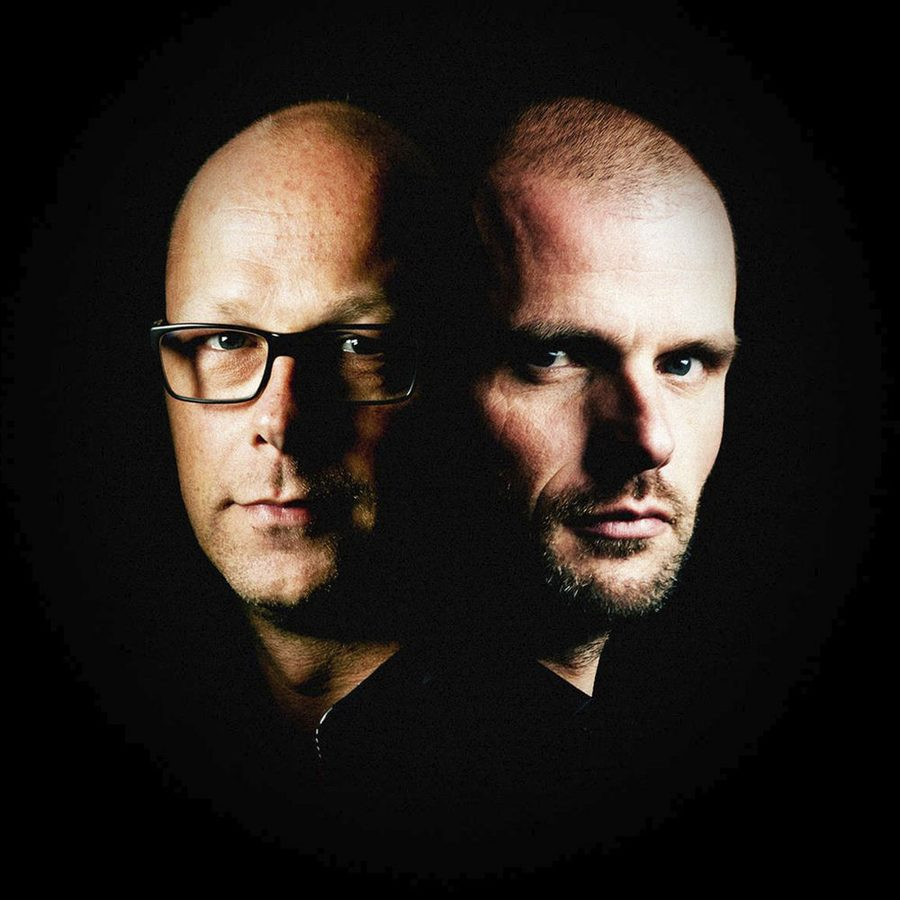

Rank 1 [Audio]: Their name came true


STREAMING AUDIO INTERVIEW
Rank 1’s story began in 1997 when Piet Bervoets and Benno de Goeij met at a party. Piet was already deep into the dance scene, DJing and working on music in his home studio. Benno, however, had no experience and was just keen to get a taste. The unlikely pairing was cemented in 1998 when the pair chose the name Rank 1, originally settling on the moniker as a joke because they thought it would be “nice to see the name at a number 1 position”. Of course, the joke became even funnier when their seminal hit ‘Airwave’ managed to reach the top spot in charts around the world not long after.
Although unquestionably their biggest track to date, ‘Airwave’ is by no means their only success, with their remix of Cygnus X’s ‘Superstring’ picked up as the theme for massive Dutch dance event Sensation in 2000. It went down so well their single ‘Such Is Life’ was selected as the Sensation theme the following year, followed by their album ‘Symsonic’, live DVD from Trance Energy 2002, and follow-up single ‘Awakening’. In recent years they had massive airplay for their collaboration with Alex Morph, ‘A Life Less Ordinary’.
They’ll be heading to Australia in a few months time to headline the Godskitchen national tour. ITM’s Angus Paterson spoke with the Dutch trance legends recently to find out what they were looking forward to most about the tour. For the full lowdown on Godskitchen head to ITM’s Festival Page HERE.
Check out the clip for Rank 1’s re-release of ‘Breathing (Airwave)’.